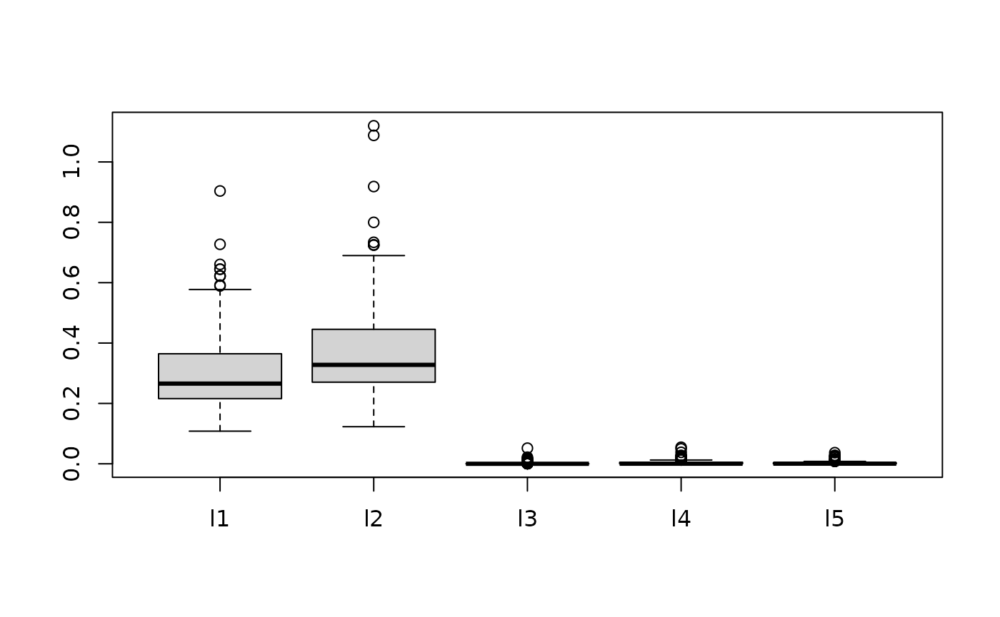

Nonparametric Regression with Bayesian Additive Regression Kernels
Merlise A Clyde
2024-06-27
Source:vignettes/bark.Rmd
bark.RmdBayesian Additive Regression Kernel (BARK) models are a flexible Bayesian nonparametric model for regression and classification problems where the unknown mean function is represented as a weighted sum of multivariate Gaussian kernel functions, \[\begin{equation} f(\mathbf{x}) = \sum_j \beta_j \prod_d \exp( \lambda_d (x_d - \chi_{jd})^2) \end{equation}\] that allows nonlinearities, interactions and feature selection using Levy random fields to construct a prior on the unknown function. Each kernel is centered at location parameters \(\chi_{jd}\) with precision parameters \(\lambda_d\) - these precision parameters capture the importance of each of the \(d\) dimensional predictor variables and by setting a \(\lambda_d\) to zero may remove important variables that are not important.
Installation
To get the latest version of {r bark}, install from github (needs compilation))
devtools::install_github("merliseclyde/bark")Example
We will illustrate feature selection in a simple simulated example from Friedman
set.seed(42)
traindata <- data.frame(sim_Friedman2(200, sd=125))
testdata <- data.frame(sim_Friedman2(1000, sd=0))
set.seed(42)
fit.bark.d <- bark(y ~ ., data = traindata,
testdata= testdata,
classification=FALSE,
selection = FALSE,
common_lambdas = FALSE,
# fixed = list(eps = .25, gam = 2.5),
nburn = 100,
nkeep = 250,
printevery = 10^10)
mean((fit.bark.d$yhat.test.mean-testdata$y)^2)
#> [1] 1604.15
set.seed(42)
fit.bark.sd <- bark(y ~ ., data=traindata,
testdata = testdata,
classification=FALSE,
selection = TRUE,
common_lambdas = FALSE,
fixed = list(eps = .5, gam = 5),
nburn = 100,
nkeep = 250,
printevery = 10^10)
mean((fit.bark.sd$yhat.test.mean-testdata$y)^2)
#> [1] 1355.865bark is similar to SVM, however it allows different kernel smoothing
parameters for every dimension of the inputs \(x\) using the option
common_lambdas = FALSE as well as selection of inputs by
allowing the kernel smoothing parameters to be zero using the option
selection = TRUE.
The plot below shows posterior draws of the \(\lambda\) for the simulated data under the two scenarios allowing different \(\lambda_d\) by dimension with and without selection.
boxplot(as.data.frame(fit.bark.d$theta.lambda))
boxplot(as.data.frame(fit.bark.sd$theta.lambda))
While the plots of the \(\lambda_j\) without selection (top) and with selection (bottom) are similar, the additional shrinkage of values towards zero has lead to an improvement in RMSE.
Comparison
We will compare {r bark} to two other popular methods, {r BART} and {r SVM} that provide flexible models that are also non-linear in the input variables.
bart.available = suppressMessages(require(BART))
svm.available = suppressMessages(require(e1071))
io.available = suppressMessages(require(fdm2id))BART
if (bart.available) {
y.loc = match("y", colnames(traindata))
friedman2.bart = wbart(x.train = as.matrix(traindata[ , -y.loc]),
y.train = traindata$y)
pred.bart = predict(friedman2.bart,
as.matrix(testdata[ , -y.loc]))
yhat.bart = apply(pred.bart, 2, mean)
mean((yhat.bart - testdata$y)^2)
}
#> *****Into main of wbart
#> *****Data:
#> data:n,p,np: 200, 4, 0
#> y1,yn: -160.199247, -161.188667
#> x1,x[n*p]: 91.480604, 2.404099
#> *****Number of Trees: 200
#> *****Number of Cut Points: 100 ... 100
#> *****burn and ndpost: 100, 1000
#> *****Prior:beta,alpha,tau,nu,lambda: 2.000000,0.950000,33.129480,3.000000,7744.575956
#> *****sigma: 199.394818
#> *****w (weights): 1.000000 ... 1.000000
#> *****Dirichlet:sparse,theta,omega,a,b,rho,augment: 0,0,1,0.5,1,4,0
#> *****nkeeptrain,nkeeptest,nkeeptestme,nkeeptreedraws: 1000,1000,1000,1000
#> *****printevery: 100
#> *****skiptr,skipte,skipteme,skiptreedraws: 1,1,1,1
#>
#> MCMC
#> done 0 (out of 1100)
#> done 100 (out of 1100)
#> done 200 (out of 1100)
#> done 300 (out of 1100)
#> done 400 (out of 1100)
#> done 500 (out of 1100)
#> done 600 (out of 1100)
#> done 700 (out of 1100)
#> done 800 (out of 1100)
#> done 900 (out of 1100)
#> done 1000 (out of 1100)
#> time: 2s
#> check counts
#> trcnt,tecnt,temecnt,treedrawscnt: 1000,0,0,1000
#> *****In main of C++ for bart prediction
#> tc (threadcount): 1
#> number of bart draws: 1000
#> number of trees in bart sum: 200
#> number of x columns: 4
#> from x,np,p: 4, 1000
#> ***using serial code
#> [1] 4605.555Classification Example
The data are generated so that only the first 2 dimensions matter
set.seed(42)
n = 500
circle2 = data.frame(sim_circle(n, dim = 5))
train = sample(1:n, size = floor(n/2), rep=FALSE)
plot(x.1 ~ x.2, data=circle2, col=y+1)
set.seed(42)
circle2.bark = bark(y ~ ., data=circle2, subset=train,
testdata = circle2[-train,],
classification = TRUE,
selection = TRUE,
common_lambdas = FALSE,
fixed = list(eps = .5, gam = 5),
nburn = 100,
nkeep = 250,
printevery = 10^10)
#Classify
#
mean((circle2.bark$yhat.test.mean > 0) != circle2[-train, "y"])
#> [1] 0.024The plot below shows posterior draws of the \(\lambda\) for the simulated data.
boxplot(as.data.frame(circle2.bark$theta.lambda)) ## SVM
if (svm.available) {
circle2.svm = svm(y ~ ., data=circle2[train,], type="C")
pred.svm = predict(circle2.svm, circle2[-train,])
mean(pred.svm != circle2[-train, "y"])
}
#> [1] 0.104
if (bart.available) {
y.loc = match("y", colnames(circle2))
circle.bart = pbart(x.train = as.matrix(circle2[train, -y.loc]),
y.train = circle2[train, y.loc])
pred.bart = predict(circle.bart, as.matrix(circle2[-train, -y.loc]))
mean((pred.bart$prob.test.mean > .5) != circle2[-train, y.loc])
}
#> *****Into main of pbart
#> *****Data:
#> data:n,p,np: 250, 5, 0
#> y1,yn: 0, 0
#> x1,x[n*p]: -0.791174, 0.207159
#> *****Number of Trees: 50
#> *****Number of Cut Points: 100 ... 100
#> *****burn and ndpost: 100, 1000
#> *****Prior:mybeta,alpha,tau: 2.000000,0.950000,0.212132
#> *****binaryOffset: -0.030084
#> *****Dirichlet:sparse,theta,omega,a,b,rho,augment: 0,0,1,0.5,1,5,0
#> *****nkeeptrain,nkeeptest,nkeeptreedraws: 1000,1000,1000
#> *****printevery: 100
#> *****skiptr,skipte,skiptreedraws: 1,1,1
#>
#> MCMC
#> done 0 (out of 1100)
#> done 100 (out of 1100)
#> done 200 (out of 1100)
#> done 300 (out of 1100)
#> done 400 (out of 1100)
#> done 500 (out of 1100)
#> done 600 (out of 1100)
#> done 700 (out of 1100)
#> done 800 (out of 1100)
#> done 900 (out of 1100)
#> done 1000 (out of 1100)
#> time: 1s
#> check counts
#> trcnt,tecnt: 1000,0
#> *****In main of C++ for bart prediction
#> tc (threadcount): 1
#> number of bart draws: 1000
#> number of trees in bart sum: 50
#> number of x columns: 5
#> from x,np,p: 5, 250
#> ***using serial code
#> [1] 0.056